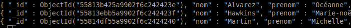

A ce stade, notre collection "fiches" contient trois documents. Comment accéder à ces documents ?
Taper l'instruction suivante dans la console mongoDB (si nécessaire, vous vous serez au préalable connecté à la base de données "maDB").
db.fiches.find()
Vous constatez que cette commande retourne les trois documents présents dans la collection fiches
Vous avez sans doute remarqué qu'une nouvelle paire "nom/valeur" est apparu pour chacun des trois documents : l' _id
MongoDB ajoute systématiquement un "_id". Les valeurs associées à cet "_id" sont très complexes. Pourquoi mongoDB a-t-il ajouté ces paires "nom/valeur" ?
Une base de données doit toujours pouvoir distinguer deux documents. Pourtant, rien ne vous empêche de saisir 2 fois les mêmes données. L'_id est une "clé primaire", dans une collection, les clés primaires doivent être différentes pour chaque enregistrement. Avec des "_id" différents, 2 enregistrements seront forcément différents.
Même si vous n'aurez sans doute jamais à vous préoccuper de ces "_id", il vaut mieux savoir qu'ils existent.
Il est possible d'obtenir seulement le premier document à l'aide de l'instruction "findOne"
Taper l'instruction suivante dans la console mongoDB
db.fiches.findOne()
Comme vous pouvez le constater, vous obtenez uniquement le premier enregistrement
Il est possible de supprimer un document d'une collection à l'aide de l'instruction "remove"
Taper l'instruction suivante dans la console mongoDB
db.fiches.remove({prenom:"Océanne"})
Faites un "find" sur la collection "fiches" pour vérifier l'action de la commande précédente
Vous avez dû remarquer que le document où le "prenom" a pour valeur "Océanne" a bien été supprimé. Si nous avions eu plusieurs documents où le "prenom" est "Océanne", tous ces documents auraient été supprimés.
N.B. Vous avez sans doute remarqué que dans l'instruction "db.fiches.remove({prenom:"Océanne"})", prenom n'est pas entouré de guillemets. Dans ce cas, vous avez le choix, vous pouvez mettre des guillemets comme ne pas en mettre.
Il est possible d'effacer tous les documents d'une collection avec un :
db.fiches.remove({})
Supprimer les deux documents restant dans la collection "fiches". Vérifier que tout s'est bien passé à l'aide d'un "find".